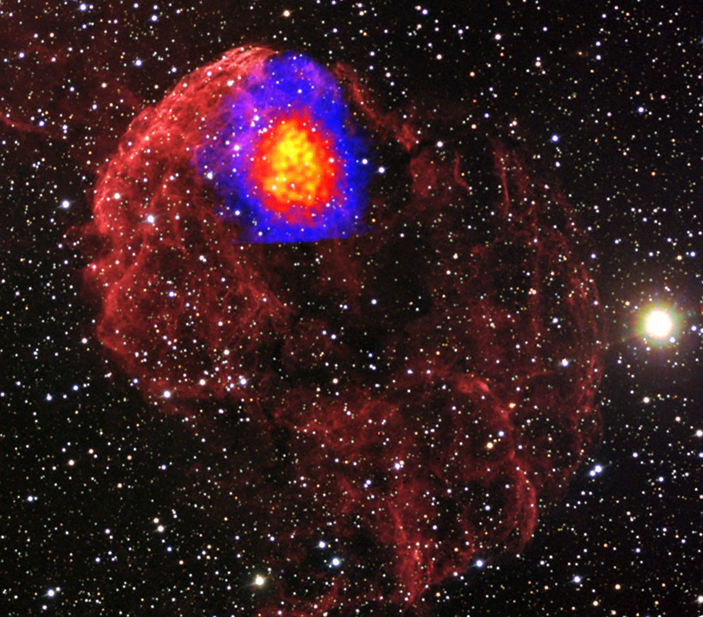

Research and science
My research interests are in presolar grains, isotope cosmochemistry, stellar nucleosynthesis, dust formation in circumstellar and interstellar environments, meteoritics, early Solar System processes and chronology, and developing analytical techniques for studying extraterrestrial materials. More recently that curiosity has moved underground, into caves that serve as analogues for other worlds.

Presolar stardust and cosmochemistry
Presolar grains are genuine pieces of stars preserved in primitive meteorites. Before our Solar System formed, dying stars shed dust into interstellar space. Some of it survived the birth of the planets, and studying it in the lab gives an unmatched view of a wide range of astrophysical and cosmochemical problems.
I analyse these grains and use them as tools to understand the physical conditions and processes in each environment they passed through during their lifetimes, from the atmospheres of Asymptotic Giant Branch (AGB) stars and the debris of supernovae to the early solar nebula.
Techniques
Secondary ion mass spectrometry (SIMS and NanoSIMS), resonance ionization mass spectrometry (RIMS), synchrotron X-ray fluorescence and tomography, Raman spectroscopy, and electron microscopy (SEM, TEM).
Research to date
My doctoral and postdoctoral work concentrated on multi-element isotopic analyses and correlated multi-technique analyses of presolar graphite grains from the Orgueil meteorite. This allowed me to identify a variety of circumstellar environments that produced presolar graphite.
Further projects include the chemical separation of presolar grains from the Tagish Lake and Jbilet Winselwan meteorites, and nitrogen isotope ratios in presolar silicon carbide grains from meteorites with different cosmic-ray exposure ages. To add: confirm which of these projects are current, and add any new work
Selected publications
- Gyngard F., Jadhav M., Nittler L. R., Stroud R. M., Zinner E. (2018). Bonanza: An extremely large dust grain from a supernova. Geochimica et Cosmochimica Acta 221, 60–86.
- Heck P. R., Jadhav M., Meier M. M. M., et al. (2018). Neon isotopes in individual presolar low-density graphite grains from the Orgueil meteorite. Meteoritics & Planetary Science.
- Strontium and barium isotopes in presolar silicon carbide grains measured with CHILI: two types of X grains (2017). Geochimica et Cosmochimica Acta. To add: author list
- Zinner E., Jadhav M. (2013). Isochrons in presolar graphite grains from Orgueil. The Astrophysical Journal 768, 100.
- Jadhav M., Amari S., Zinner E., Maruoka T. (2006). Isotopic analysis of presolar graphite grains from Orgueil. New Astronomy Reviews 50, 591–595.
Full list on Google Scholar. To add: pick your own top 5–8 papers if these aren't the right ones
Cave microbiomes and Earth analogues
Earth's deepest caves are natural laboratories for understanding how life survives with no light and very little food, and for testing ideas about where life might exist on other planets.
With the Caves and Karst Exploration Society (CAKES), I carry out field research on cave microbiomes: sampling and characterising the microbial communities that live in isolated, dark, nutrient-poor karst systems.
This connects underground ecology to astrobiology, to identifying signs of life, and to planning exploration of underground environments elsewhere in the Solar System, such as lava tubes on Mars and the icy crusts of moons like Europa and Enceladus.
To add: which caves or regions you work in, current projects, collaborators, and any results or publications